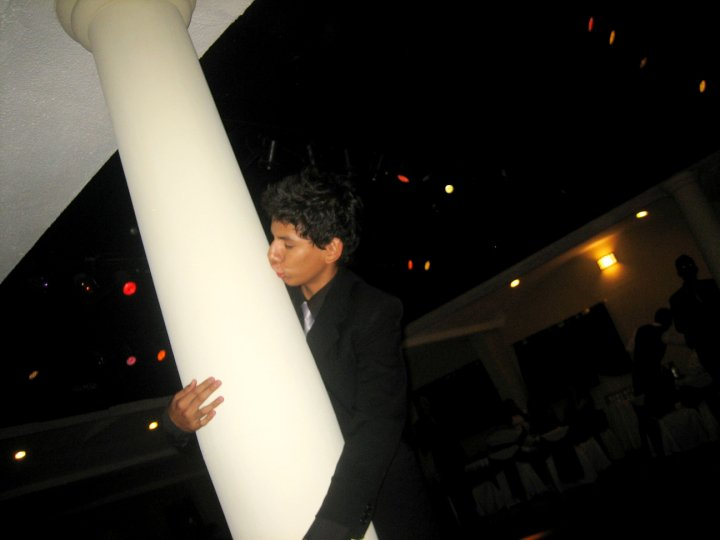
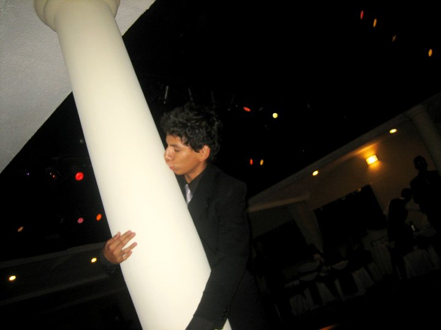

Daniel Hernandez
Daniel HernandezSecundaria en ETI #74
Tengo que admitir que la transicion de la secundaria a la primaria fue algo de lo más emocionante de mi vida. Aún recuerdo el entuciasmo que tenía de entrar y conocer gente nueva(más a las mujeres) ya me soñaba teniendo muchas novias y siendo el más popular de la secundaria(mis sueños guajiros).
Tengo que admitir que no fue taaal como lo esperé pero tampoco me fue tan mal, hice muy buenos amigos y tuve 2 novias de las cuales hablaré más adelante.
Durante mi primer año tenía que meterme a un taller y decidí entrar a informática donde la verdad no aprendí mucho si no es que nada. No ponía mucha atención a las clases y lo único que me gustaba era danza y educación física.
Tengo que admitir que se me daba bien el baile desde muy pequeño era aventado y me ponía a bailar con la muchacha que se me pusiera en frente. Facilmente fui chambelan de 5 o 6 quinceañeras y de una de ellas yo puse la coreografía la cual bailamos thriller de michael jackson, no es por nada pero fue todo un exito la coreografía.
El futbol fue el primer deporte que en verdad me gustó y no era ni un poco de bueno, pero me encantaba hechar patadas, era muy faltero es por eso que en el equipo de la secundaria era portero, no me daba miedo hecharme mis saltos para tapar la pelota y eso me hacía "eficiente" en la porteria. Creo que en toda la secundaria ganamos 3 torneos, 2 de soccer y 1 de uruguayo, y aun que participé más en torneos de futbol sal ahí no pude ganar nunca.
 
En el segundo año de mi secundaria recuerdo que llegó un nuevo compañero al salón ese muchacho se llamaba "carlos pero era mayor mente conocido como "el charly" era un men de otro planeta y no era exactamente el chico cool de la secundaria era mas bien el chico raro famoso por las cosas raras que hacía, recuerdo una vez que nos platicó como salvó la vida de su novia de ahogarse atravesando un popote atraves de su garganta o esta otra vez que nos contó que era agente secreto del FBI porque había "hackeado" su página web, era tan panchero pero tan divertido escucharlo a la vez, una vez le apostamos a que no montaba un caballo, para nuestra sorpresa no le sacó y se subió al caballo hasta que un compañero le dió una nalgada al caballo y salió corriendo, facilmente estuvo dando vueltas como 5 minutos hasta que paró y charly se bajó casi a nada de vomitar.
Pero la mayor parte de mi tiempo pasé la mayor parte con mi novia, aún recuerdo haber tenido novia de puro pedo, fue un 14 de febrero llegué con una paleta grande de corazón donde metí una nota que decía "¿Quieres ser mi novia?", y para ser sincero no tenía ni idea de a quien darsela, así que vi la primer oportunidad con una muchacha se la di y de casualidad funcionó, creo que duramos 7 o 6 meses donde fue pura calentura pero bien aprovechada.
Mi tercer año fue un va y ven de emociones ya que conocí a otra muchacha super hermosa y linda, me gustaba y le gustaba el problema es que era amiga de mi ex novia y se me hacía incorrecto, entre ver si se hacía con ella o no, conocí a otra muchacha igual amiga de mi ex y amiga de la que me gustaba actualmente, pero con ella solamente era algo informal, aún así sabían ambas y por alguna razón entre más nos venían juntos más les gustaba.
Fue un total caos cuando salí me sentí aliviado y a la vez algo triste iba a extrañar a mis compañeros y a mis ex amores, pero la vida sigue y nos encontramos con más y mejores personas que nos ayudan a mejorar día con día.
Música favorita
- Link in park
- Limp Bizkit
- Eminem
- Snoop Dog
- Evanescence
Cosas que hacía en mi tiempo libre
- Jugar Futbol
- Ejercicio
- Ir al parque
- Andar de lurio
- Ver la televisión
- Ser bien moxxo
- Zkrivir azy
- colarme en las fotos

Video juegos favoritos
- GTA: San andreas
- Crazy Taxi
- Counter Strike
- Sims
- Hotel Habbo
Preparatoria en Cetis #68
Durante mi primer año de preparatoria vi muchos rostros conocidos de la secundaria de donde venía y vi muchos nuevos, el primer año de prepa es de inducción así que todavía no tenía un taller y para mi era todo juego así que me la tomé ligero al principio era el tipico niño broma que todos los días salía con un chiste nuevo. Me encantaba el desmadre, pintiarmela e imitar a mis profesores, creo que eran mis pasa tiempos favoritos en la prepa. De alguna forma ser gracioso me servía con las mujeres y gracias a eso conocí a una muchacha 2 semanas antes de salir de vacaciones, hablabamos y reíamos era lindo pero no veía una relación, Hasta que salimos de vacaciones y yo me fui a mazatlan y de pura casualidad me la encontré ahí, se estaba quedando en el hotel de un lado y para mi suerte o sorpresa era prima de una muchacha con la que estaba quedando durante la secundaria e iba con ella en esas vacaciones así que verla fue para mi casi imposible ya que las cosas no terminaron del todo bien con esa muchacha. Pero hablabamos por sms, cuando regresamos de las vacaciones fui a visitarla y en ese momento me decidí a hacerla mi novia y le llegué. Con ella duré seis meses si no es que más y les juro que fui el más cursi del mundo y me da hasta pena recordar todo lo que hacía. Ella vivía a 7 cuadras de mi casa así que las visitas eran diarias sí señores DIARIAS, los meses siempre eran de regalo y con contarles que hasta cena les preparaba a mis suegros. Cosa que no se ha vuelto a repetir en la vida. Así que si no soy romantico, cursi etc. es que ahí derroché toda mi carta. Afortunadamente terminamos, yo era muy celoso y ella muy liberal supongo y yo por sospechas de que ella me engañaba terminé pero terminé pensando en que ella iba a volver a mi, cosa que nunca pasó y al tiempo me enteré que me había sido infiel con un "amigo" con el que salía y tomada, bah cosas que pasan.

Fue un fin de año complicado para mi, mi mejor amiga fallece unas semanas despues de mi cumple años en un accidente en una cuatrimoto, no entendía lo dificíl que era perder a alguien que veías y con quien hablabas a diario, nunca olvidaré todo lo que haciamos y todo lo que sabiamos de nosotros, crecimos juntos. Me duele que no terminemos juntos.

El segundo año Me calmé un poco más y tomé mas seriedad a la escuela pero todavía me gustaba el desmadre y salir cada fin de semana viernes y sabado en la noche se me hizo costumbre, decidí tomar mi taller en mantenimiento industrial, donde aprendí a soldar, a hacer instalaciones electricas y a usar el torno, no me quejo no enseñaban mucho pero aprendía el que quería, teníamos las herramientas necesarias para practicar y los materiales para hacer y des hacer. Mis compañeros de salón son los mejores que me pudieron tocar algunos mas divertidos, otros más calmados pero todos chidos aún hablo con algunos de ellos y salimos, pero ya tendremos tiempo para platicar de eso. También hacía reposteria para tener para el gasto de la semana, hacía pan de fresa, de platano y pay de queso, siempre se me vendía muy rápido, no es por nada pero soy muy bueno vendiendo. Hablando de amores puedo deicr que tuve dos novias, la primera la quise mucho, pero como vivía tan lejos no podía visitarla mucho y aparte iba en otra preparatoria así que la veía como 2 veces a la semana y gastando como 60 pesos de camiones así que no duramos mucho pero nos hicimos muy buenos amigos. Mi segunda novia fue algo inesperado, la verdad fue por una apuesta y tampoco duré mucho, fueron como 3 meses y se me hace mucho. Pero había una muchacha en el salón quién comenzó a llamarme la atención por su forma de pensar, aparte de su hermosa sonrisa, sus ojos cafés profundos que te atrapan, su cicatriz en su rostro, su risa, su voz... No hablaré de más ya que podría dedicar todo un apartado a ella, su nombre es Aime, así sin tilde.
Recuerdo una vez que tuve que robarme el coche para ir a llevarle serenata con radio porque todavía no sabía tocar ningún instrumento, iba con otros 4 amigos, cuando llegamos a su casa subimos a todo volumen la canción de chiquilla de los kumbia kings y la cantamos a todo pulmón pero no salió ni ella ni sus papás a corrernos, supongo que no fue lo suficientemente fuerte. Siendo sinceros estoy feliz de que no saliera en ninguna de las 3 veces que fui.
Fue en mi tercer año de preparatoria estuve más lurio y desatado, eramos los amos de la preparatoria Leo, Heliú y Jesús mis mejores amigos de la preparatoria, hicimos y deshicimos, nos peleamos y tomamos, nos la pasabamos mas fuera del salón que dentro, viendo nada mas que agarrabamos. Los profesores nos conocían y eramos a migos de ellos por eso no había tanto problema, con presentar los trabajos y tareas era suficiente. Cuando tenía 16 tuve otra novia pero a ella de plano ni atención le ponía. para entonces ya estava bien enculado con Aime, para mi no había otra más que ella. Pero tengo que admitir que ya tomando se me olvidaba y agarraba lo que caía a mis manos. En fín creo que con ella duré como 1 mes.


Me desaté si antes salía solo los fines de semana, durante este año salía entre semana también y aun que tomaramos tonayan salíamos y nos la pasabamos muy bien, afortunadamente entre tanta mensada que haciamos siempre nos saliamos con la nuestra, nunca terminamos en barandilla, ni muy golpeados, ni botados. Pero no todo fue peda y desmadre, también seguí mi vida de deportista jugando futbol y entrenando artes marciales mixtas, aparte que estaba aprendiendo a tocar la guitarra, así que tampoco fue un año de sólo fiesta.
El último mes de la preparatoria fue lo mejor de todo, estabamos planeando hacer un viaje de despedida a mazatlan creo, el cual terminó siendo en Salinas, Ahome. La cual fue yo creo la mejor decición de todas ya que estuvo de locos, había cerveza, tequila, whisky y lo mejor es que no había una sóla alma en el lugar que no estuviera borracho y riendo. Aún recuerdo vagamente las historias de un amigo llamado Noel, gritando que había visto cangrejos gigantes en la playa, otro contaba de su historia cuando peleo con majim bu(un profesor) y otros dos que eran cuates buscando a un amigo llorando literalmente y griantando "¡es nuestro carnalito, hermanito donde estás!", fue todo un caos y sólo una noche que no se ha repetido a pesar de que hemos vuelto más de una vez. Pero lo mejor fue que le confesé mi amor a Aime y ella me dijo que también sentía algo por mi, les juro que fue una bendición y una maldición, un día sentía que era el hombre más féliz del mundo y el otro me quería morir, pero así es ella, es recordarte que estás vivo y que vale la pena vivir por algo.
En fin no me arrepiento de nada de lo que hice y cada momento lo disfruté al máximo.

Música favorita
- Metallica
- Cancerbero
- Enanitos Verdes
- Los aldeanos
- Guns & Roses
Cosas que hacía en mi tiempo libre
- Tocar la guitarra
- Jugar futbol
- Jugar video juegos
- Ir al centro comercial
- Hacer pan
Malas experiencias manejando
- No llevaba mucho tiempo manejando pero ya me aventaba a manejar por las ciudades de los mochis, ya que no se me hacía tan complicado andar en la ciudad, esto pasó cuando tenía 15 años aproximadamente. Ibamos a casa de una muchacha unos amigos con los que jugaba "League of Legends", estabamos tomando y ya teníamos rato, a mi se me subieron las cervezas y ya estaba con la cara medio peluda. Ya cerca de su casa hay una calle con dos carriles yo pensaba que era doble sentido, pero estaba equivocado, sin mirar mi retrovisor quiero dar la vuelta para meterme a otra calle y en eso pasa una camioneta zumbando por un lado de nosotros, no les miento cuando les digo que hasta la borrachera se me bajó. Desde ese entonces la pienso más para tomar mientras manejo.
- Cuando tenía aproximadamente 12 años teníamos una cuatrimoto automática en la cual estuve cerca de no contarla, iba con un amigo a todo lo que da por una calle donde casi nadie transita, por alguna razón en mi cabeza de chamaco no se me ocurrió frenar ya para dar vuelta porque la calle terminaba, ya que reaccioné que había que frenar no pude frenar a tiempo y dimos la vuelta a modo de que la moto se puso en llantas, tuvimos que empujarla con la pierna de vuelta para enderezarla. Por suerte no paso de un susto y de mi no volviendo a hacer eso.